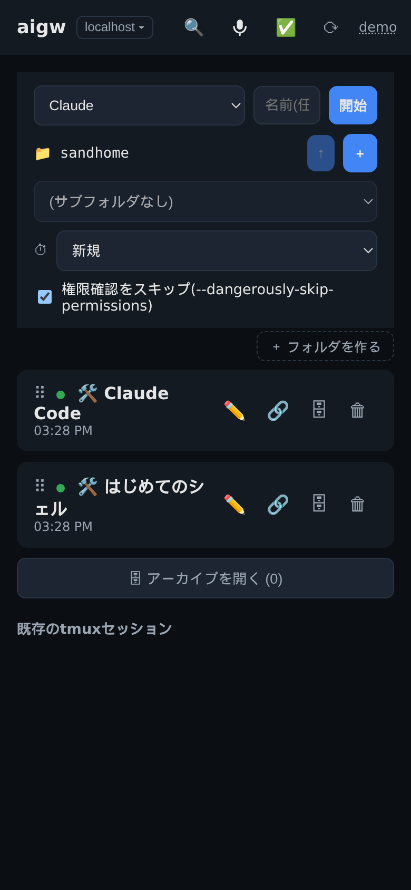
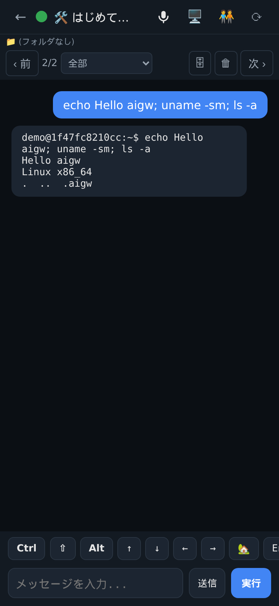
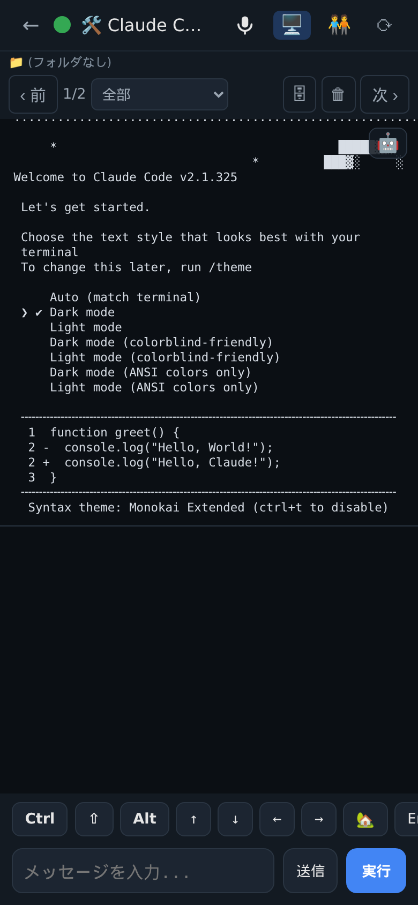

aigw チュートリアル Docker で試す
自分の PC(や手元のサーバー)で、aigw を Docker のコンテナ1つで動かして試す手順です。サーバーの管理者がいなくても、ブラウザからシェルや Claude Code のセッションを使うところまで、15分ほどで試せます。
基本編・発展編は、管理者が用意した本番のサーバー(Google でログインし、利用者ごとのコンテナで動く)向けの説明です。このデモは「1人分の aigw を手元で動かす」ための仮の構成で、使えない機能もあります(8章)。
1. 用意するもの
- Docker: Windows・Mac なら Docker Desktop、Linux なら Docker Engine。
docker run hello-worldが動けば大丈夫です。 - git(リポジトリを取ってくるため。ZIP でダウンロードしてもかまいません)。
- ブラウザ: Chrome・Edge・Firefox。Safari ではログインできません(4章)。
- ディスクの空き 3 GB ほど(できあがるイメージは Claude Code 入りで約 940 MB ですが、作る途中で元のイメージや途中の層も置かれます)。
- Claude Code を使うなら、Claude のアカウント(Pro・Max などのプラン、または API キー)。シェルだけなら要りません。
2. 取ってきて、イメージを作る
git clone https://github.com/haselab-net/aigw.git
cd aigw
docker build -f docker/Dockerfile -t aigw-demo .数分かかります(Debian・Python・tmux と、Claude Code のネイティブ版を入れます)。Claude Code が要らなければ、docker build --build-arg WITH_CLAUDE=0 -f docker/Dockerfile -t aigw-demo . で小さく速く作れます。
3. 起動する
docker run -d --name aigw-demo -p 127.0.0.1:8878:8878 -v aigw-demo-home:/home/demo aigw-demo| 指定 | 意味 |
|---|---|
-d --name aigw-demo | 裏で動かし、aigw-demo という名前を付ける |
-p 127.0.0.1:8878:8878 | この PC の中からだけ 8878 番で開けるようにする。127.0.0.1: を外さないでください(外すと、同じネットワークの誰でもデモに入れます) |
-v aigw-demo-home:/home/demo | デモの利用者のホーム(作ったファイル・Claude Code のログイン)を Docker のボリュームに置く。コンテナを作り直しても残る |
8878 番がもう使われていたら、-p 127.0.0.1:18878:8878 のように左側の数字を変え、以下の URL もその番号にします。
ssh -L 8878:127.0.0.1:8878 <サーバー> でつないでから、手元のブラウザで開きます。4. 開いてログインする

- ブラウザで
http://localhost:8878/agents/を開きます。 - 「Log in as the demo user」を押すと、セッションの一覧が出ます。
demo)になり、コンテナの中でシェルを使えます。信頼できない人に触らせないでください。デモにログインしたブラウザで、信頼できないページを開いたままにしないでください。ログインできるのは localhost・127.0.0.1 のアドレスで開いたときだけです。別の名前で開きたいときは、docker run に -e AIGW_DEMO_HOSTS=名前 を足します。
Safari はこの形(http の localhost)ではログインの Cookie を受け取らないので、ログインしても一覧に入れません。Chrome・Edge・Firefox を使ってください。
5. シェルのセッションを使う

- 一番上の選択肢で「Shell (sandbox内)」を選び、名前を入れて(空でもよい)「開始」。
- 一覧にセッションが増えます。名前をタップすると開きます。
一覧の ✏️ は名前の変更、🔗 は他のセッションとつなぐ(連携。発展編)、🗄 はアーカイブ、🗑 は削除です。セッションは止めない限りコンテナの中で動き続け、ブラウザを閉じても続きから見られます。

- 下の入力欄にコマンドを書いて「実行」(Enter 付きで送る)。「送信」は Enter を付けずに文字だけ送ります。
- 送った文が右に、ターミナルに出た結果が左に、チャットのように並びます。
- 入力欄の上の Ctrl・Alt・矢印などのボタンで、スマホでも特別なキーを送れます(Ctrl を押してから C など)。
- 上の 🖥️ でターミナルの画面そのものも見られます。
シェルはコンテナの中で demo として動き、ホームは /home/demo/sandhome です(本番の「自分専用のコンテナ」の代わり)。
6. Claude Code を使う

- 一覧の一番上で「Claude」を選び、「開始」。その下の 📁 で作業フォルダを選べます(
sandhomeの下)。 - セッションを開き、上の 🖥️ で画面を出します。初回だけ、Claude Code の設定が出ます。
- 文字の色合いを選ぶ: 入力欄の上の ↑ ↓ で動かし、入力欄を空のまま「実行」で決定。
- ログイン方法を選ぶと URL が出ます。その URL をブラウザで開いてログインし、表示されたコードを入力欄に貼って「実行」。
- あとはチャットに日本語で指示を書いて「実行」するだけです。Claude Code が
sandhomeの中でファイルを作り、コマンドを動かします。
ログインの情報は /home/demo にあるので、-v aigw-demo-home:/home/demo を付けていれば、コンテナを作り直しても残ります。
「権限確認をスキップ」が入っていると、Claude Code はいちいち確認せずにコマンドを実行します。動くのはコンテナの中だけですが、外せば毎回確認を求めます。
画面の見方・キー入力・チャットとターミナル画面の関係は、基本編の2・3・5・6章がそのまま当てはまります。
7. 止める・消す・データの置き場所
| したいこと | コマンド |
|---|---|
| 止める / また動かす | docker stop aigw-demo / docker start aigw-demo |
| 新しい版にする | git pull してから 2章の docker build、docker rm -f aigw-demo、3章の docker run |
| コンテナを消す(データは残す) | docker rm -f aigw-demo |
| データも消す | 上に加えて docker volume rm aigw-demo-home |
| コンテナの中に入る | docker exec -it -u demo aigw-demo bash |
作ったファイルは /home/demo/sandhome(ボリューム aigw-demo-home の中)にあります。セッションの一覧と記録も /home/demo の下なので、ボリュームを残せば次に起動したときも続きから使えます。コンテナを作り直すとログインは切れるので、もう一度「Log in as the demo user」を押してください。
8. デモでできないこと
| 機能 | デモでは |
|---|---|
| Google でのログイン・複数の利用者・自分でアカウントを作る | 無い。利用者は demo の1人だけ |
| 「Shell (sandbox外・ホスト)」・ルートのシェル・パスキー | 使えない(パスキーで開く仕組みが入っていない)。ボタンが出ても失敗します |
| Codex | イメージに入っていない |
| ssh でつなぐ他のマシン・Windows 機の黒板 | 設定が無いので出ない |
| スマホへの通知(Web Push) | 鍵が無いので送られない |
| 共有 | 相手になる利用者がいないので、実質使えない |
| 利用者ごとのコンテナで隔てる | 無い。セッションもバックエンドも同じコンテナの中で動く |
本番の構成との違いは docker/README.md にまとめてあります。